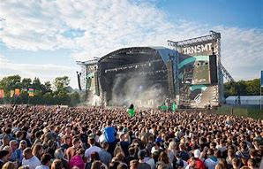
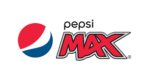
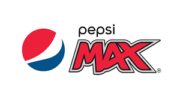

ALL POINTS EAST, VICTORIA PARK, LONDON One of the earliest of the bigger music festivals on the calendar and one you don’t want to miss if possible is All Points East, held at the magnificent Victoria Park in London. Held across two weekends. Simply put, great and iconic backdrop for six days of amazing music from a diverse range of artists and bands.
Headliners The Chemical Brothers, The Strokes, Christina and the Queens, Bring Me The Horizon, Mumford & Sons and Bon Iver will be joined by an outstanding selection including First Aid Kit, The Vaccines, Idles, Run The Jewels, Leon Bridges, Mac DeMarco, Jade Bird, James Blake, The Raconteurs, Interpol, Primal Scream, Hot Chip, Jon Hopkins and Spiritualized among many many more.
24TH TO 26TH MAY & 31ST MAY TO 2ND JUNE
 TRNSMT FESTIVAL, GLASGOW GREEN Originally TRNSMT Festival was staged as an interim event by the organisers of the world-famous T in the Park, while that was currently being moved to a new location. However, as there was rather surprisingly not a big music festival in such a huge cultural hotspot as Glasgow is, it has now become a yearly event in its own right. For the third year running, there will be three days of great music within the grounds of Glasgow Green.
Headliners Stormzy, Catfish and the Bottlemen and George Ezra will be joined by Snow Patrol, Bastille, Gerry Cinnamon (local favourites), Richard Ashcroft, The Hunna, Circa Waves, Jess Glynne, Tom Grennan, The Amazons and whole lot more. 12TH TO 14TH JULY
Parklife Festival lineup: Tyler, the Creator, Skepta, Lewis Capaldi, Khalid, Jorja Smith, Giggs, Anderson .Paak & The Free Nationals, Robyn
Parklife Festival is one of the UK's most popular and famous weekend music festivals, laying on a programme of diverse and cutting-edge music inside Manchester's Heaton Park.
Curated by a number of the UK's most renowned clubbing brands, the weekender has rubber stamped its position at the very front of the country's dance music scene.
When & where: 13-14th June 2020; Manchester
Let It Roll Let It Roll is pretty much the mothership of drum and bass music. A former military airbase outside of Prague might sound like the perfect place for 4 days and 9 spectacular stages at 170bpm. And that would be because it is.
When & where: 30 July - 1 August 2020, Milovice, Czech Republic
Creamfields The flagship festival of the iconic Cream brand, which became famous through its legendary Liverpool club nights back in the 90s, Creamfields is the UK's premier electronic music weekend.
Attracting over 70,000 people and over 300 of the world's hottest dance acts performing across 30 stages over the 4 day weekend, its lineups are as diverse as they are top-tier.
When & where: 27-30 August 2020, Daresbury, UK
Dekmental A hive of forward-thinking electronic music, Dekmantel has cemented itself as the festival of choice for those looking to experience new trends.
It's a brand that steers clear of headline grabbing names and gimmicks, instead encouraging and rewarding risk-taking. As a result, Dekmantel has become many DJs' favourite festival to play.
When & where: 31 July - 4 August 2020, Amsterdam, Netherlands


 
